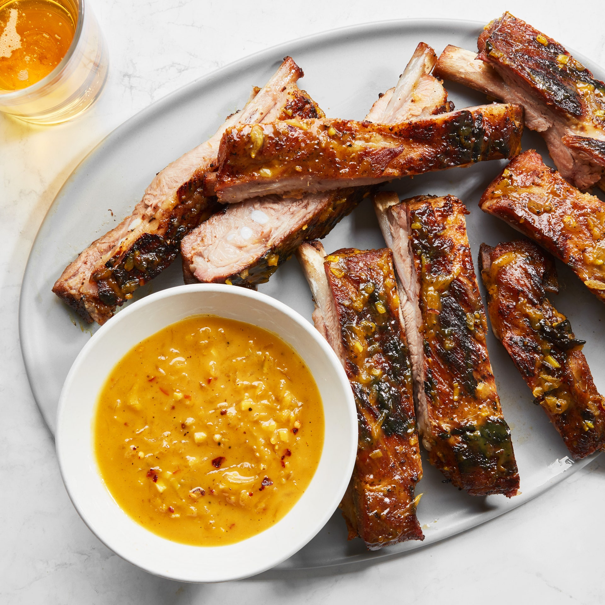

Ginger and Mustard BBQ Sauce

Description
This barbecue sauce recipe combines bright ginger and sharp Dijon mustard; it's perfect for slathering on chicken thighs, a head of cauliflower, or pork spareribs. Ginger ale, honey, and granulated sugar create a trifecta of sweetness that is balanced by the spike of garlic and crushed red pepper flakes. One of the best attributes of this sauce—which is easily made with pantry ingredients—is its palpable zing that never dissipates, but rather remains impressively deep and complex.
Ingredients
-
1 12-oz. bottle or can of ginger ale (such as Seagram's)
-
¼ cup yellow mustard
-
2 Tbsp. Dijon mustard
-
1 2" piece ginger, peeled, finely chopped
-
3 garlic cloves, finely chopped
-
½ cup grated sweet onion
-
3 Tbsp. honey
-
1 Tbsp. granulated sugar
-
2 tsp. Diamond Crystal or 1 tsp. Morton kosher salt
-
1 tsp. apple cider vinegar
-
½ tsp. coarsely ground black pepper
-
¼ tsp. crushed red pepper flakes
Steps
-
Whisk ginger ale, yellow mustard, and Dijon mustard in a medium saucepan to combine. Bring to a simmer over medium heat; reduce heat to low and gently simmer 3 minutes. Whisk in ginger, garlic, onion, honey, sugar, salt, vinegar, black pepper, and red pepper flakes and cook, stirring occasionally, until flavors have come together and sauce is very fragrant, 15–20 minutes. Let cool before using.
Do ahead: Sauce can be made 2 days ahead. Transfer to an airtight container; cover and chill.